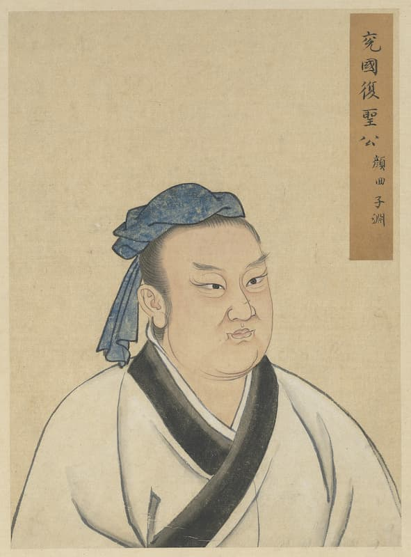
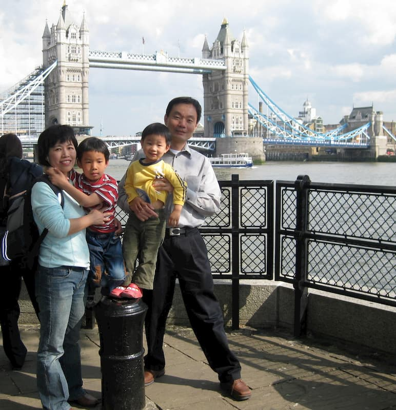

Good day, I am
My name means nothing to me, and it holds no cultural significance.
My parents named me after a character in The Sixth Sense; I haven’t watched the movie yet though. They realized my name was hard for native Chinese speakers to pronounce, so they chose an easier one for my brother.
I like my name because it’s short and monosyllabic, but perhaps it could be shorter and more intuitive to spell (eg San, Sa, S?), but then it might look too Chinese and affect some people’s initial perceptions before meeting me. I prefer Irish spelling because it’s shorter.
I would call myself Taiwanese and more generally Asian but distinctively not Chinese because their government makes them undesirable. I also identify as Californian but not American for similar reasons.
Conveniently, my Western and Chinese zodiacs are both sheep. I like sheep because they're cute, fluffy, and recognizable.
2003-04-09 is an acceptable date to be born on because it all has single digits, but this makes writing it ambiguous (4/9 is either April 9 or September 4). Being the oldest sibling is acceptable because I get to get through school before they make it worse: I narrowly avoided CAASPP testing in fifth grade and I nearly was able to avoid the SELF program and have Dunbar in Gunn. However, it means my parents use me as a test subject for my younger brother.
I can develop for the front end of websites and make pretty cool web apps and games like Gunn Student Simulator, OlamREEE, and UGWA. I’m also interested in conlangs and linguistics.
So far, Gunn Student Simulator has been pretty successful; surprisingly, even some Paly students have heard of it. The game would get a “success” score on my popularity-based rubric.
My extended family had been in Taiwan for a while, even before the Kuomintang fled from Mainland China during the Chinese Civil War.
 My dad says this guy, Yan Hui (顏回), is apparently one of our ancestors according to some generational record. He was Confucius's favourite disciple. This portrait was taken from Wikipedia; artist unknown.My parents immigrated to the United States from Taiwan; my mom liked Western cultures and wanted to experience a different lifestyle, while my dad just wanted a better life. Before coming to Palo Alto, my mom lived in England for 7 months for university, and my dad was in Princeton.
 Our family visiting Europe in 2009. I think we're posing in front of a bridge in London.My family history is only important to me because it makes me Asian, which makes me unfavourable to forced diversity by places like colleges. I also care that Taiwan is recognized for being independent and having access to Google. Otherwise my history is fairly unimportant.
Click this little circle thing to see my "special talent" →